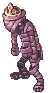
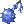
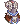
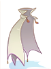

Infinite Space (Español)
Resumen
| Requisitos | |
|---|---|
| Nivel Base: | 100 |
| Lugar de Inicio: | Pharos Beacon Island (cmd_fild07 54/278) |
| Recompensas | |
| Experiencia: | - |
| Items: |  Shattered Magic Stone Shattered Magic Stone
|
Puedes llegar rápidamente a la entrada de Infinite Space usando el Warper > Instances > Infinite Space, o usando el Kafra Teleport Service del staff de Kafra en Morroc y Comodo (Teleport > Comodo Pharos Beacon) luego camina hacia el faro en el lado superior izquierdo de la isla. Habla con Reckless Explorer para crear la instancia e ingresar a ella. Una vez dentro, el lider de party debe hablar con ella nuevamente para seleccionar el nivel de dificultad (Normal o Hard).
Infinite Space es similar a Endless Tower y Endless Cellar; consiste en 50 pisos, en los cuales aparecerán diferentes monstruos. Debes despejar la sala antes de poder avanzar hacia la siguiente. Los Boss aparecen en las salas 10, 20, 30, 40, y 50. Tras derrotar al MvP de esa sala, aparecerá un Treasure Chest, del cual caerán Shattered Magic Stone. A diferencia de instancias como Old Glast Heim, no hay un cooldown separado para cada dificultad de la instancia, por lo que si seleccionas la dificultad Normal y completas la instancia, debes esperar hasta las 00:00 horas server para poder generar una nueva instancia e ingresar con un nivel de dificultad distinto.
Los MVP's, Mini-Boss, y monstruos especiales tales como Infinity Poring, exclusivo del nivel de dificultad Hard, dropean Shattered Magic Stones. Este item puede ser intercambiado por Infinity Weapons o el Rift Armor set. También puedes usar los Shattered Magic Stone para encantar las Infinity Weapons y el Rift Armor set, y también para reiniciar sus encantos.
Mob relevante
Este es un listado de Boss y Mini-Boss que encontrarás en ciertos pisos de Infinite Space. Otros enemigos en esta instancia son bastante similares tanto en apariencia como en drops comparados a sus versiones normales, sin embargo, las versiones de esta instancia cuentan con mas HP. Ciertos monstruos ya no son considerados mini-boss.
| Imagen | Nombre | Nivel | HP | Tamaño/Raza/Elemento |
|---|---|---|---|---|

|
Infinite Toad | 105 | 900,000 | Medium/Fish/Water 1 |

|
Infinite Vagabond Wolf | 105 | 900,000 | Medium/Brute/Earth 1 |

|
Infinite Vocal | 105 | 900,000 | Medium/Insect/Earth 1 |
| Infinite Eclipse | 105 | 900,000 | Medium/Brute/Neutral 3 | |

|
Infinite Chimera | 105 | 900,000 | Large/Brute/Fire 3 |
| Infinite Eddga | 110 | 1,850,000 | Large/Brute/Fire 1 | |
|  | Infinite Osiris | 110 | 2,850,000 | Medium/Undead/Undead 4 |

|
Infinite Phreeoni | 110 | 4,750,000 | Large/Brute/Neutral 3 |

|
Infinite Orc Hero | 110 | 6,650,000 | Large/Demi Human/Earth 2 |

|
Infinite Tao Gunka | 110 | 8,550,000 | Large/Demon/Neutral 3 |
Recompensas
En las siguientes listas aparecen todas las Armas, equipos y cartas que pueden ser obtenidas en Infinite Space. Puedes comprar las Infinity Weapons y el Rift Armor Set con Relic Appraiser /navi cmd_fild07 57/274 por 50 Shattered Magic Stones cada pieza.
Infinity Weapons
Todas las Infinity Weapons son armas de Nivel 4, tienen un slot, y el Nivel Base mínimo para poder equiparlas es 100.
| Imagen | Nombre | Equipable por | Descripción |
|---|---|---|---|

|
Infinity Dagger [1] | Novice, Swordman Class, Mage Class, Archer Class,
Merchant Class, Thief Class, Ninja |
ATK +125
MATK +100 |

|
 Infinity Mace [1] | Rune Knight, Royal Guard, Arch Bishop,
Sura, Mechanic, Genetic |
ATK +155 |

|
Infinity Two Handed Axe [1] | Rune Knight, Royal Guard,
Mechanic, Genetic |
ATK +265 |

|
Infinity Bow [1] | Ranger, Minstrel, Wanderer, Shadow Chaser | ATK +160 |

|
Infinity Two Handed Sword [1] | Rune Knight, Royal Guard | ATK +230 |

|
Infinity Two Handed Staff [1] | Warlock, Sorcerer | ATK +30
MATK +170 |

|
 Infinity Violin [1] Infinity Violin [1]
|
Minstrel | ATK +150 |

|
Infinity Whip [1] | Wanderer | ATK +150 |

|
Infinity Shuriken [1] | Kagerou, Oboro | ATK +150
MATK +40 |

|
Infinity Revolver [1] | Rebellion | ATK +175 |
Rift Armor Set
Cada pieza del Rift Armor Set tienen un slot, pueden ser equipados por todas las clases, y el Nivel Base mínimo para equiparlos es 100.
| Imagen | Nombre | Descripción |
|---|---|---|

|
 Ancient Decoration of Rift [1] Ancient Decoration of Rift [1]
|
Max HP +1000.
Si el nivel de refine es igual o superior a +7, Max HP +400. Si el nivel de refine es igual o superior a +9, Max HP +600. |

|
 Ancient Armor of Rift [1] | Max HP +500, Max SP -100.
Si el nivel de refine es igual o superior a +6, Max HP +400. Si el nivel de refine es igual o superior a +9, Max HP +600. Si se equipa junto con Si se equipa junto con Manteau of Rift [1] y incrementa el HP restaurado cuando el usuario recibe curaciones de otros jugadores en un 5%, incrementa la efectividad de las curaciones del usuario en un 5%. La sumatoria total de los niveles de refine del armor, garment, y footgear incrementan ambos ratios de curación, hasta un 30% adicional. |
|  | Manteau of Rift [1] | Max HP +300, Max SP -50.
Si el nivel de refine es igual o superior a +7 or higher, Max HP +400 adicional. Si el nivel de refine es igual o superior a +9 or higher, Max HP +600 adicional. |

|
 Shoes of Rift [1] Shoes of Rift [1]
|
Max HP +300, Max SP -50.
Si el nivel de refine es igual o superior a +7 or higher, Max HP +400 adicional. Si el nivel de refine es igual o superior a +9 or higher, Max HP +600 adicional. |
Cartas
| Carta | Va en: | Efecto |
|---|---|---|
| Botas | Perfect Dodge +2.
Si el nivel de refine es igual o superior a +7, Perfect Dodge +2. Si el nivel de refine es igual o superior a +9, Perfect Dodge +3. | |
| Botas | ATK +10.
Si el nivel de refine es igual o superior a +7, ATK +10. Si el nivel de refine es igual o superior a +9, ATK +15. | |
| Botas | MDEF +5.
Si el nivel de refine es igual o superior a +7, MDEF +10. Si el nivel de refine es igual o superior a +9, MDEF +15. | |
| Botas | Max HP +300.
Si el nivel de refine es igual o superior a +7, Max HP +300. Si el nivel de refine es igual o superior a +9, Max HP +400. | |
| Garment | Max HP +8%, Max SP +4%.
Si se usa junto con unas botas equipadas con: Infinite Toad, Infinite Vagabond Wolf, Infinite Eclipse, o Infinite Vocal Card, ATK +10%, MATK +10%. | |
| Accessorio | Cada vez que el usuario mata una unidad con un ataque melee, recupera 300 HP. | |
| Botas | Cuando el usuario recibe daño físico, hay un 50% de probabilidades de autocastear Provoke Lv 10 en el enemigo. | |
| Arma | CRIT +100. | |
| Headgear | Cuando el usuario recibe daño mágico, hay un 100% de probabilidades de provocar Stun en el enemigo. VIT +3. | |
| Armadura | Max HP +10,000. AGI -10. |
Encantos
Todas las Infinity Weapons y todas las piezas del Rift Armor Set pueden ser encantadas con Relic Reinforcer /navi cmd_fild07 60/274 por 20 Shattered Magic Stones por cada intento. El item debe estar equipado para poder ser encantado.
Cada equipo puede recibir encantos en el 4to y 3er slot. Puedes seleccionar entre tres tipos de encantos, Physical, Caster o Ranged.
Reiniciar los encantos cuesta 30 Shattered Magic Stones y eliminará todos los encantos previos. Hay un 30% de probabilidades de destruir el item al reiniciar los encantos.
| Equipo | Grupo de Encantos | Physical | Caster | Ranged |
|---|---|---|---|---|
| Infinity Weapons | Grupo 1 | STR +1, STR +2 | INT +1, INT +2 | DEX +1, DEX +2 |
| Grupo 2 | Fighting Spirit 1 ~ Fighting Spirit 8 | Spell 1 ~ Spell 8 | Expert Archer 1 ~ Expert Archer 8 | |
| Ancient Armor of Rift [1] y Shoes of Rift [1]
|
Grupo 1 | STR +1 ~ STR +4 | INT +1 ~ INT +4 | DEX +1 ~ DEX +4 |
| Grupo 2 | Max HP +100 ~ Max HP +300 | Max SP +25 ~ Max SP +75 | Max SP +25 ~ Max SP +75 | |
| Ancient Decoration of Rift [1] y Manteau of Rift [1] |
Grupo 1 | STR +1 ~ STR +4 | INT +1 ~ INT +4 | DEX +1 ~ DEX +4 |
| Grupo 2 | Max HP +1% ~ Max HP +5% | Max HP +1% ~ Max HP +5% | Max HP +1% ~ Max HP +5% |